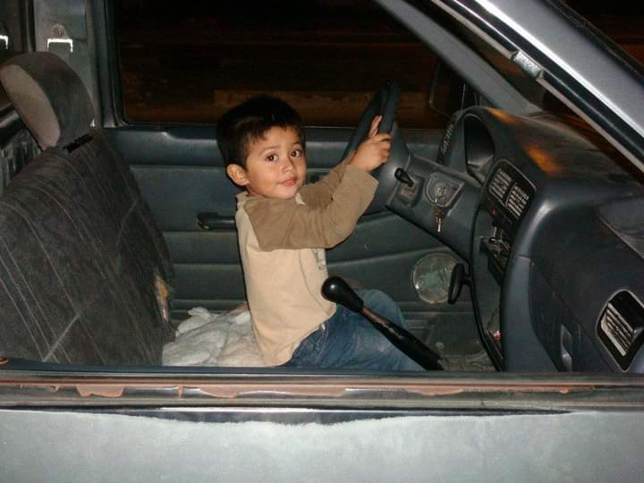
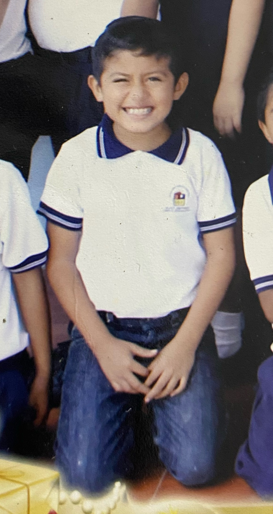

Childhood Stages
0-6 Years
In my early years, I was going to be a very active and curious child, enjoying exploring and being with family, always eager to learn. I am going to remember the love and joy experienced at home.

Childhood Stages
6-12 Years
During my school years, I started playing baseball, winning individual and team trophies. Joining Pioneros and winning a championship was a very important moment. I later discovered soccer, which was going to become important , and I made good friends and learned teamwork.